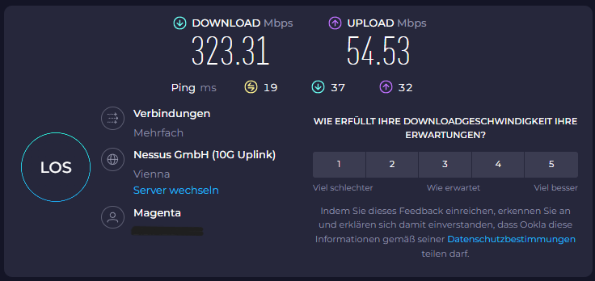
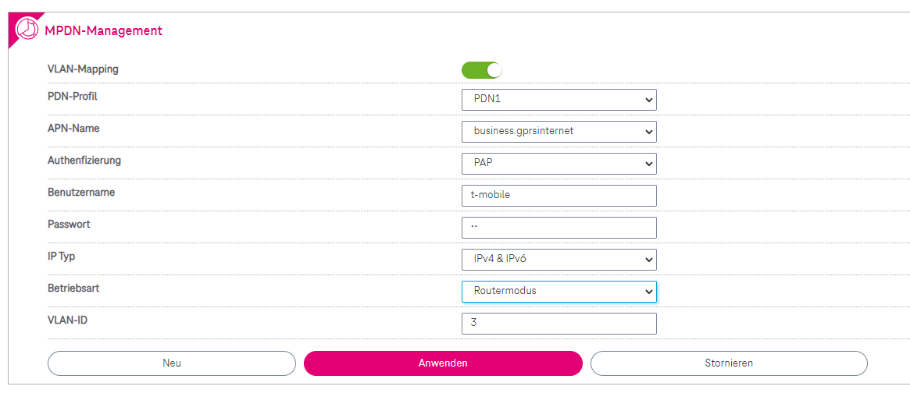
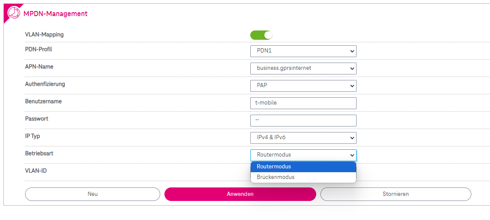
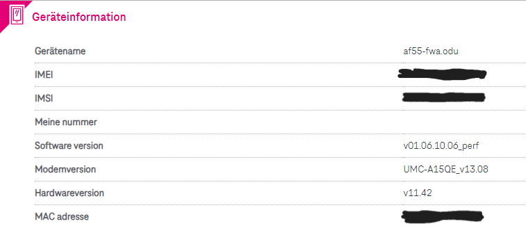

Welche Outdoor-Box? Hersteller/Modellbezeichnung bitte

Hallo,
habe seit kurzem einen 5G Internettarif 300Mbit/s mit Outdoor Box geholt.
Wenn ich das Internet mit den Werkseinstellungen der Indoor und Outdoor Einheit verwende funktioniert alles Super da ich anscheinend mir
mit nur wenigen die Internetbandbreite teilen muss:

Jetzt aber zu meinen Problemen:
Da das Internet von Magenta in Zukunft das Hybrid Internet von A1 ersetzen soll (da mittlerweile bei uns in der Umgebung schneller und stabiler und das am Land)
muss ich die Outdoor Unit im Bridge Mode betreiben damit der Indoor Router (wird später durch TP-Link ER707-M2 Router ersetzt) die öffentliche IPv4 Adresse bekommt und es möglich ist Ports zu öffnen.(Brauche das weil: 2x Wechselrichter, 1x Energiemanagement System, 1x Heizungssteuerung über App, 1xHeizungssteuerung über VNC, 1x Synology NAS für Daten und Videoüberwachung, und in Zukunft auch noch DynDNS und eigenes VPN)
Leider kommt es nach der Umstellung auf "Business APN" und "Bridge Mode" zu Problemen egal ob ich es als einziges hinterlegtes Profile verwende oder als zweites mit Aktivierten VLan.
Probleme nach der Umstellung:
- Internetverbindung bricht in kurzen Zeitabständen zusammen. (scheint aber kein Problem des Mobilfunks zu sein sondern zwischen Indoor und Outdoor Unit auch zwei Minuten vom Netz nehmen beider Geräte hilft nicht)
- Nach der Änderung der DNS Server in der Indoor Unit ist keine Namensauflösung mehr möglich.(mit nslookup: DNS request timed out. timeout was 2 seconds.)
- Komischerweise wenn das Internet mal geht kriege ich keine 30Mbit/s am Rechner über Lan aber wenn ich Lan Controller deaktiviere und es über WLAN versuche habe ich die volle Bandbreite bis die Internetverbindung wieder abbricht.
- Habe es auch mit einer Fritzbox 4040 als Indoor Unit versucht, gleiches Problem (bis auf das WLan - Lan Problem oberhalb beschrieben) nur das die erst nach ca. 5h angefangen haben und nicht sofort.
Falls jemand ähnliche Probleme hatte, wie habt ihr diese gelöst?
Danke schonmal im Voraus und Sorry falls ich einen Beitrag der das gleiche Problem beschreibt übersehen habe.
Outdoor Unit Version:
Software version: v01.06.10.06_perf
Modemversion: UMC-A15QE_v13.08
Hardwareversion: v11.42
Indoor Unit:
Current Firmware Version: 1.0.2.240613
Bearbeitet von thaZalega
Welche Outdoor-Box? Hersteller/Modellbezeichnung bitte

Er meint die wnc af55
Aber wie schon beschrieben mit den Script was ich gepostet habe auf Bridge umstellen oder mit der console ab ändern aber
NOCHMALS
egal mit welchem Ger√§t man verliert an Geschwindigkeit etc im Bridge Modus ist bei allen so ! Vergesst einfach den Bridge Modus üòâ
Einfach normal lassen und gut ist es also so lassen und einfach anderen dran wie ich zum Beispiel den Xiaomi ax3000t und l√§uft tadellos üòÉ mfg
Bearbeitet von Klaximaxi43Am 24.8.2024 um 16:17 schrieb Klaximaxi43:Er meint die wnc af55
Aber wie schon beschrieben mit den Script was ich gepostet habe auf Bridge umstellen oder mit der console ab ändern aber
NOCHMALS
egal mit welchem Ger√§t man verliert an Geschwindigkeit etc im Bridge Modus ist bei allen so ! Vergesst einfach den Bridge Modus üòâ
Einfach normal lassen und gut ist es also so lassen und einfach anderen dran wie ich zum Beispiel den Xiaomi ax3000t und l√§uft tadellos üòÉ mfg
Danke!
Hab das Script schon gesehen nur das bringt mir nicht viel da ich in meiner ODU bridge mode ohne probleme auswählen kann ohne ein weiteres Profil anzulegen.
Habe es jetzt so gelöst das ich auf business.gprsinternet im Router Modus umgestellt habe mit vlan id und mac-dmz.
Damit scheint es zu funktionieren bis auf das ich die public ip dadurch nicht durchgereicht bekomme.
Portweiterleitung scheint zu funktionieren nachdem ich testweiße seit ein paar tagen auf einem Raspberry ein tor-relay betreibe.
Der Bridge-mode funktioniert anscheinend nicht stabil bzw. nicht so wie es soll.
Die fritzbox kriegt zwar die richtige public ip nur das meine Requests die rausgeschickt werden anscheinend von der ODU rausgefiltert werden und die fritzbox nach umstellen auf bridge-mode nicht mehr von der ODU erkannt wird weshalb trotz mac-dmz das nix bringt.
Habe mit der fritzbox die pakete aufgezeichnet und sehr oft Einträge mit der Bezeichnung "Communication administratively filterd" bekommen.
Wahrscheinlich wird die Firmware der ODU das Problem sein bin aber kein Profi weshalb ich mir da auch nicht wirklich sicher bin.
Vielleicht hole ich mir die Nebula FWA710 von Zyxel kostet zwar ca. 500€ aber die sollte das dann können und nachdem ich nicht damit rechne das ich irgendwann in den nächsten 5 Jahren Glasfaser bekomme lohnt sich es dann schon.
Aber trotzdem danke f√ºr eure Antworten. üôÇ
Das Problem im Bridge Modus wurde ihr schon beschrieben damit es Probleme gibt ! Aber ja mit vlan sollte es ja passen !
Wie kannst du es ohne Script umstellen das geht eigentlich nicht bei der odu wnc außer du hast eine erste Firmware noch drauf eine alte was aber auch nicht viel Sinn hat dann !
Da bist der einzige mit der wnc das du es so umstellen kannst !
Das business.gprsinternet ist halt ohne ipv6 dann !
Kann nur sagen ich habe keine Probleme habe es einfach so belassen und nur die idu aus getauscht und fertig ! Mehr Speed als vorher sogar √ºber den Tarif dr√ºber üòÑ
Bridge Modus ist keine Lösung egal bei welchem Router da man immer Speed verliert da ist Fakt !
Selbe wie das ganze Mesh system nur Verlust solange kein triband (nicht geteiltes) !
Ob ein Tausch einen Sinn hat ist immer die Frage das kann man e nur testen mal !
Trotzdem viel Erfolg mfg
Am 28.8.2024 um 15:12 schrieb Klaximaxi43:Wie kannst du es ohne Script umstellen das geht eigentlich nicht bei der odu wnc außer du hast eine erste Firmware noch drauf eine alte was aber auch nicht viel Sinn hat dann !
So sieht es bei mir aus ohne Script:  
Das ist die Version der ODU:

Am 28.8.2024 um 15:12 schrieb Klaximaxi43:Kann nur sagen ich habe keine Probleme habe es einfach so belassen und nur die idu aus getauscht und fertig ! Mehr Speed als vorher sogar √ºber den Tarif dr√ºber üòÑ
Ist bei mir gleich.
Mit
CGNAT: ca. 300-350Mbit/s
Public IP: ca. 290-300Mbit/s
und für die kurze Zeit die der Bridge Mode geht mit Public IP: 240-300Mbit
Aber wie du schon geschrieben hast muss man testen ob es mit einer anderen ODU besser oder schlechter geht kann ja eh die ODU von Zyxel im Zweifelsfall zurückschicken aber ich denke mir halt das Zyxel Router schon mehr können sollten nachdem die Geld mit Router und den Zusatz Features machen und nicht mit Mobilfunk Verträgen.
LG
Der Zyxel NR7302 hat bei mir in Bridge-Mode deutlich mehr Durchsatz.
Zuerst max. der Funkzelle und pendelt dann auf Tariflimit +50Mbit.
Im Routermodus hat der NR7302 durchschnittlich 150Mbit. Generell kann man also nicht sagen, dass Bridge-Modus langsamer ist. Was auch technisch nicht korrekt ist, da der Router dahinter ja gewisse Aufgaben abnimmt und so die CPU des Modems entlastet.
Am 19.8.2024 um 16:01 schrieb thaZalega:Hallo,
habe seit kurzem einen 5G Internettarif 300Mbit/s mit Outdoor Box geholt.
Wenn ich das Internet mit den Werkseinstellungen der Indoor und Outdoor Einheit verwende funktioniert alles Super da ich anscheinend mir
mit nur wenigen die Internetbandbreite teilen muss:
Jetzt aber zu meinen Problemen:
Da das Internet von Magenta in Zukunft das Hybrid Internet von A1 ersetzen soll (da mittlerweile bei uns in der Umgebung schneller und stabiler und das am Land)
muss ich die Outdoor Unit im Bridge Mode betreiben damit der Indoor Router (wird später durch TP-Link ER707-M2 Router ersetzt) die öffentliche IPv4 Adresse bekommt und es möglich ist Ports zu öffnen.(Brauche das weil: 2x Wechselrichter, 1x Energiemanagement System, 1x Heizungssteuerung über App, 1xHeizungssteuerung über VNC, 1x Synology NAS für Daten und Videoüberwachung, und in Zukunft auch noch DynDNS und eigenes VPN)
Leider kommt es nach der Umstellung auf "Business APN" und "Bridge Mode" zu Problemen egal ob ich es als einziges hinterlegtes Profile verwende oder als zweites mit Aktivierten VLan.
Probleme nach der Umstellung:
- Internetverbindung bricht in kurzen Zeitabständen zusammen. (scheint aber kein Problem des Mobilfunks zu sein sondern zwischen Indoor und Outdoor Unit auch zwei Minuten vom Netz nehmen beider Geräte hilft nicht)
- Nach der Änderung der DNS Server in der Indoor Unit ist keine Namensauflösung mehr möglich.(mit nslookup: DNS request timed out. timeout was 2 seconds.)
- Komischerweise wenn das Internet mal geht kriege ich keine 30Mbit/s am Rechner über Lan aber wenn ich Lan Controller deaktiviere und es über WLAN versuche habe ich die volle Bandbreite bis die Internetverbindung wieder abbricht.
- Habe es auch mit einer Fritzbox 4040 als Indoor Unit versucht, gleiches Problem (bis auf das WLan - Lan Problem oberhalb beschrieben) nur das die erst nach ca. 5h angefangen haben und nicht sofort.
Falls jemand ähnliche Probleme hatte, wie habt ihr diese gelöst?
Danke schonmal im Voraus und Sorry falls ich einen Beitrag der das gleiche Problem beschreibt übersehen habe.
Outdoor Unit Version:
Software version: v01.06.10.06_perf
Modemversion: UMC-A15QE_v13.08
Hardwareversion: v11.42
Indoor Unit:
Current Firmware Version: 1.0.2.240613
Hallo!
Es scheint so als würde es tatsächlich an der ODU liegen, ich hab nun die V2 und diese macht das selbe wie du es beschreibst... Ich benötige ebenso die IP an der UDM. Hab nun die alte ODU wieder angehängt mit neuer Sim Karte und siehe da die volle Geschwindigkeit wieder da....
Hoffentlich ist dass ganze mit einem Softwareupdate in Zukunft irgendwann mal erledigt

Am 19.8.2024 um 16:01 schrieb thaZalega:Da das Internet von Magenta in Zukunft das Hybrid Internet von A1 ersetzen soll (da mittlerweile bei uns in der Umgebung schneller und stabiler und das am Land)
muss ich die Outdoor Unit im Bridge Mode betreiben damit der Indoor Router (wird später durch TP-Link ER707-M2 Router ersetzt) die öffentliche IPv4 Adresse bekommt und es möglich ist Ports zu öffnen.(Brauche das weil: 2x Wechselrichter, 1x Energiemanagement System, 1x Heizungssteuerung über App, 1xHeizungssteuerung über VNC, 1x Synology NAS für Daten und Videoüberwachung, und in Zukunft auch noch DynDNS und eigenes VPN)
@thaZalega
Bitte
keinen Welchserichter über Portweiterleitung ins Internet lassen!
Lass am besten nur das VPN über eine Portweiterleitung erreichbar sein. Wireguard geht auch über doppelt NAT, dazu auf der ODU die Portweiterleitung für die UDP Port von Wireguard einrichten.
{kind=link}
{kind=link}
{kind=link}